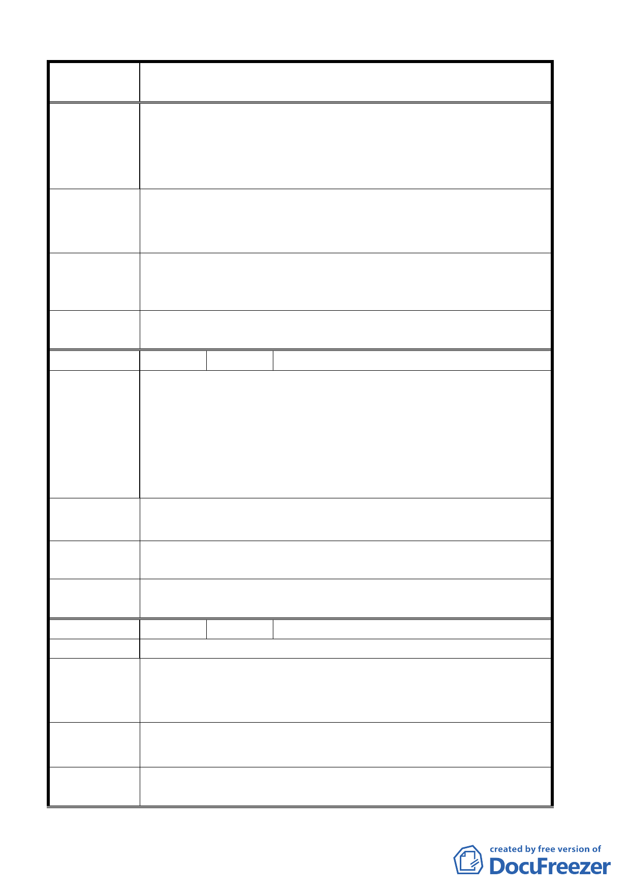

案 名 臺北市北投區都市計畫通盤檢討案（主要計畫）案
童，與墳墓為鄰，當是學生與家長所不樂見的吧！。
2.東半部被徵收十年未闢建，與土地法第 219 條規定已相符
合，今市府應將西半部土地徵收補償費等開發經費編列於第
〝玖〞條內，以避免地主之抗爭，創造市府與人民雙贏之前景。
請將行義公園未徵收部分之開發實施進度及經費列入北投區都
建 議 辦 法 市計畫通盤檢討案（主要計畫）案內之第〝玖〞條內，以免讓
市民誤以為該公園保留地之規劃，並無實質上之需要。
專案小組審
查結論
93.12.27 專案小組第十次審查會議：有關計畫案納入行義公園
用地開發實施進度及經費乙節，不屬於通盤檢討計畫案內容，
歉難採納。
委員會議
決議
同意依專案小組審查結論辦理。
編 號 ６ 陳情人 高智明
一、編號「榮一」案之本社區，於民國 70 年 5 月 28 日府工字
第 21745 號「變更台北市士林區北投區都市計畫公共設施
陳情理由
用地（通盤檢討）案」公告圖並不包括東面端部成尖銳三
角形之土地在內。
二、且東端三角形土地，自始至今，既無法從本社區道路進出，
也與本社區任一筆土地不相聯通。
建 議 辦 法 故本次北投區都市計畫通盤檢討案，編號「榮一」之公展圖上
不應將其列入，請予修正，以符前一項原公告圖。
專案小組審
查結論
94.3.3 專案小組第 11 次審查會議：同意陳情人建議。
委員會議
決議
同意依專案小組審查結論辦理。
編 號 ７ 陳情人 大南汽車股份有限公司
陳 情 理 由 請將本區既有三十餘年之建築物一併納入規劃。
由於本區既有之建築物，均已超過三十餘年，因屬農業保護區，
建 議 辦 法 遇有災損整建或住宅運用甚感不便，陳請比照志仁高中周邊住
宅規劃方式，一併納入住三區規劃
專案小組審
93.4.29 專案小組第四次審查會議：依本市土地使用分區管制
規則，保護區仍允許公用事業作附條件允許使用。建議維持原
查 結 論 公展計畫。
委員會議
決議
同意依專案小組審查結論辦理。
第 9 頁，共 49 頁